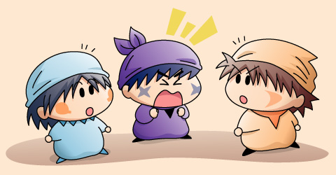

ホトス「発表します！
10月の漬け物コンテストは何とアクミさんが初優勝を飾りました！
作品名は『乙女の祈り』。
刺激的かつ幻想的な味の仕上がりに高い評価が集まったと言えましょう！
アクミさん、優勝した今のお気持ちは？」
アクミ「あたいがちょっと本気を見せれば楽勝なんだよ」
ホトス「今回はどんなところに苦労したのでしょう？」
アクミ「苦労なんてしてねぇよ。
ホントはケーキを作っていたんだけどな、
変なにおいがしてきたから、せっかくだからと思って
漬け物コンテストに出してみたのさ」
ホトス「・・・。
そして７回連続優勝のカメリさんは、残念ながら２位と
なってしまいました！
作品名は『恋するハート』。
いつもの作品よりもさらに味が複雑で、それにより
作品名の雰囲気が理解しにくかったのが惜しかったところで…」
サスケ「ちょっと待てだぜ！
カメリの漬け物が一番なんだぜ！」

カメリ「サスケくん！」
アクミ「あ～ん？、何なんだよおまえは！」
舞台は漬け物コンテストの表彰式。こんな風に表彰式があるのかどうか怪しく、またアクミが大勢の前に現れるのも珍しいかも。ストーリー展開のための強引な設定ですが、何でもアリな妖精界だからいろいろ理由を付けることは可能かな(^^;。
当初はカメリとサスケを一枚の絵にまとめようとしましたが、どうやっても構図がうまくまとまらないので結局サスケを別に抜き出すことに…。ホトスは初めて描きましたが、描く部分が多くて大変な妖精ですね。アニメを参考にしたのですが、登場する回によって微妙に服装などが異なっているような。。
(2005/10/29)